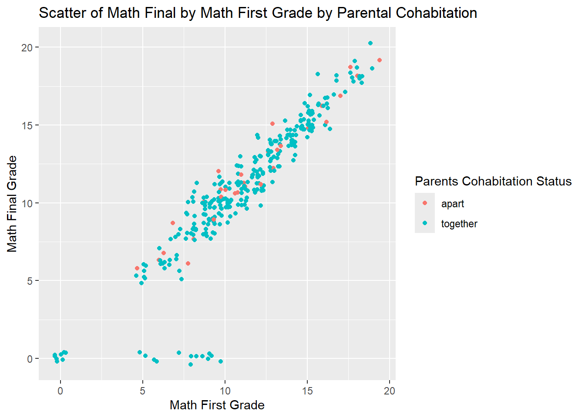
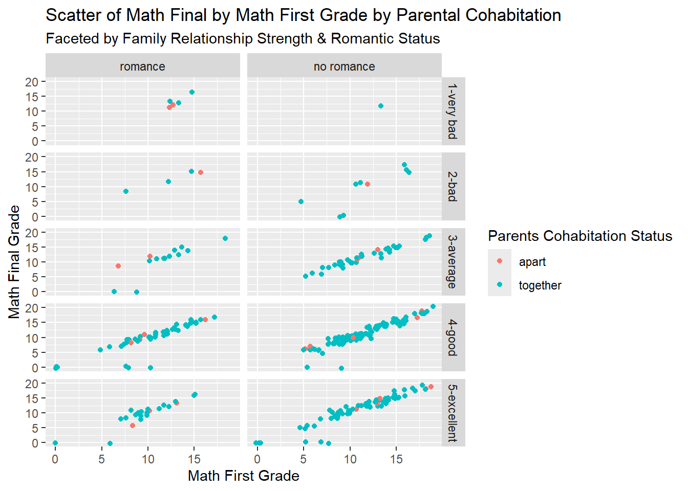
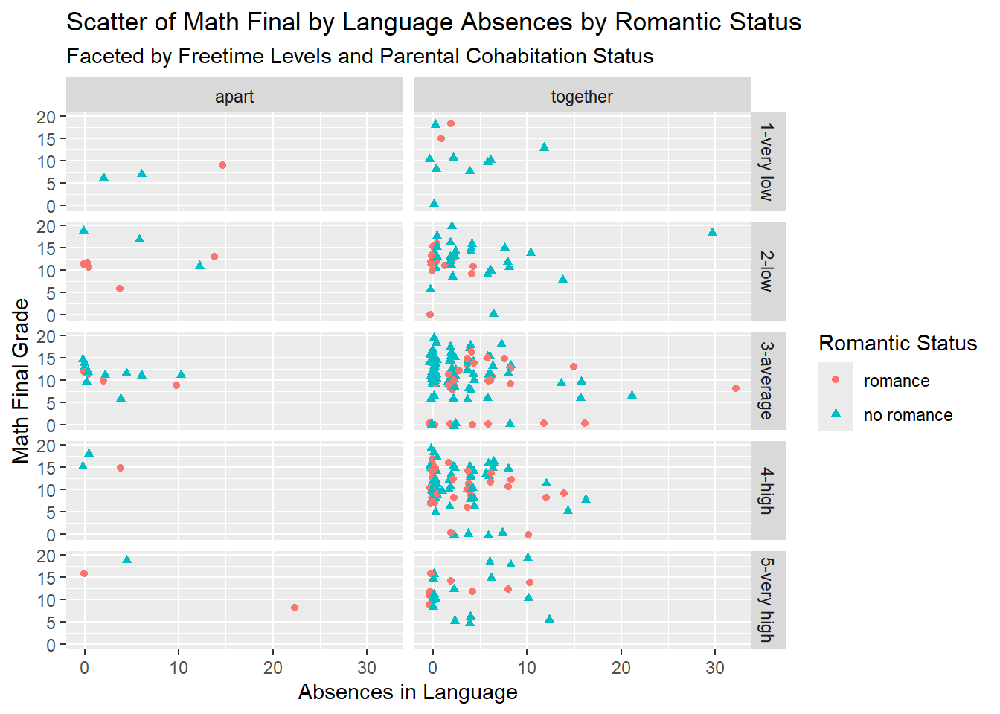

9 Mjob - mother’s job (nominal: ‘teacher’, ‘health’ care related, civil ‘services’ (e.g. administrative or police), - ‘at_home’ or ‘other’)
10 Fjob - father’s job (nominal: ‘teacher’, ‘health’ care related, civil ‘services’ (e.g. administrative or police), - ‘at_home’ or ‘other’)
11 reason - reason to choose this school (nominal: close to ‘home’, school ‘reputation’, ‘course’ preference or ‘other’)
12 guardian - student’s guardian (nominal: ‘mother’, ‘father’ or ‘other’)
13 traveltime - home to school travel time (numeric: 1 - <15 min., 2 - 15 to 30 min., 3 - 30 min. to 1 hour, or 4 - >1 hour)
14 studytime - weekly study time (numeric: 1 - <2 hours, 2 - 2 to 5 hours, 3 - 5 to 10 hours, or 4 - >10 hours)
15 failures - number of past class failures (numeric: n if 1<=n<3, else 4)
16 schoolsup - extra educational support (binary: yes or no)
17 famsup - family educational support (binary: yes or no)
18 paid - extra paid classes within the course subject (Math or Portuguese) (binary: yes or no)
19 activities - extra-curricular activities (binary: yes or no)
20 nursery - attended nursery school (binary: yes or no)
21 higher - wants to take higher education (binary: yes or no)
22 internet - Internet access at home (binary: yes or no)
23 romantic - with a romantic relationship (binary: yes or no)
24 famrel - quality of family relationships (numeric: from 1 - very bad to 5 - excellent)
25 freetime - free time after school (numeric: from 1 - very low to 5 - very high)
26 goout - going out with friends (numeric: from 1 - very low to 5 - very high)
27 Dalc - workday alcohol consumption (numeric: from 1 - very low to 5 - very high)
28 Walc - weekend alcohol consumption (numeric: from 1 - very low to 5 - very high)
29 health - current health status (numeric: from 1 - very bad to 5 - very good)
30 absences - number of school absences (numeric: from 0 to 93)
These grades are related with the course subject, Math or Portuguese:
31 G1 - first period grade (numeric: from 0 to 20)
31 G2 - second period grade (numeric: from 0 to 20)
32 G3 - final grade (numeric: from 0 to 20, output target)
Libraries
library(tidyverse)
── Attaching core tidyverse packages ──────────────────────── tidyverse 2.0.0 ──
✔ dplyr 1.1.4 ✔ readr 2.1.5
✔ forcats 1.0.0 ✔ stringr 1.5.1
✔ ggplot2 3.5.1 ✔ tibble 3.2.1
✔ lubridate 1.9.3 ✔ tidyr 1.3.1
✔ purrr 1.0.2
── Conflicts ────────────────────────────────────────── tidyverse_conflicts() ──
✖ dplyr::filter() masks stats::filter()
✖ dplyr::lag() masks stats::lag()
ℹ Use the conflicted package (<http://conflicted.r-lib.org/>) to force all conflicts to become errors
library(psych)
Attaching package: 'psych'
The following objects are masked from 'package:ggplot2':
%+%, alpha
library(GGally)
Registered S3 method overwritten by 'GGally':
method from
+.gg ggplot2
Read and Modify Data
Read and Join
First, reading in using the provided R code:
d1 <-read.table("student-mat.csv",sep=";",header=TRUE)d2 <-read.table("student-por.csv",sep=";",header=TRUE)d3 <-merge(d1,d2,by=c("school","sex","age","address","famsize","Pstatus","Medu","Fedu","Mjob","Fjob","reason","nursery","internet"))print(nrow(d3)) # 382 students
[1] 382
Now, reading in using tidyverse methods.
mat_data <-read_csv2(file ="student-mat.csv")
ℹ Using "','" as decimal and "'.'" as grouping mark. Use `read_delim()` for more control.
Rows: 395 Columns: 33
── Column specification ────────────────────────────────────────────────────────
Delimiter: ";"
chr (17): school, sex, address, famsize, Pstatus, Mjob, Fjob, reason, guardi...
dbl (16): age, Medu, Fedu, traveltime, studytime, failures, famrel, freetime...
ℹ Use `spec()` to retrieve the full column specification for this data.
ℹ Specify the column types or set `show_col_types = FALSE` to quiet this message.
por_data <-read_csv2(file ="student-por.csv")
ℹ Using "','" as decimal and "'.'" as grouping mark. Use `read_delim()` for more control.
Rows: 649 Columns: 33── Column specification ────────────────────────────────────────────────────────
Delimiter: ";"
chr (17): school, sex, address, famsize, Pstatus, Mjob, Fjob, reason, guardi...
dbl (16): age, Medu, Fedu, traveltime, studytime, failures, famrel, freetime...
ℹ Use `spec()` to retrieve the full column specification for this data.
ℹ Specify the column types or set `show_col_types = FALSE` to quiet this message.
Warning in inner_join(mat_data, por_data, by = c("school", "sex", "age", : Detected an unexpected many-to-many relationship between `x` and `y`.
ℹ Row 79 of `x` matches multiple rows in `y`.
ℹ Row 79 of `y` matches multiple rows in `x`.
ℹ If a many-to-many relationship is expected, set `relationship =
"many-to-many"` to silence this warning.
There is a warning announced, referencing a many-to-many relationship between x and y. Trying again, joining on all variables except G1,G2,G3,paid,absences. Will use this result for all further exercises. Rather than listing all 28 desired vars for join, manually, I will first join on a selection of the two tables without the noted five fields. Then, I will join this result with the original mat and por data to get the additional fields, adjusting the names to include the course type as a suffix (G1 -> G1.mat, G1.por, etc.).
#join the subset firstall_data <-inner_join(select(mat_data,-c(G1,G2,G3,paid,absences)),select(por_data,-c(G1,G2,G3,paid,absences)) )
#add in the missing fields from mat and renameall_data <-left_join( all_data, mat_data ) |>rename_with(~paste(.x,".mat",sep=""),.cols =c(G1,G2,G3,paid,absences) )
I’d like to study the relationships of grades with these categorical variables:
Pstatus: parent’s cohabitation status (binary: ‘T’ - living together or ‘A’ - apart)
freetime: free time after school (numeric: from 1 - very low to 5 - very high)
famrel: quality of family relationships (numeric: from 1 - very bad to 5 - excellent)
romantic: with a romantic relationship (binary: yes or no)
Important note: For some of these fields, I am changing values from 1-5 to labels, but I do not have sufficient access to the original terminology used by survey participants for each value 1,2,3,4,5. I have the label for the 1 and the 5, only. I am adding a typical label for the middle responses,but these are a guess on my part and not suitable for strict interpretation as listed.
So, we will convert these to factor fields, for all three tibbles (math, portuguese, combined). To make this modular and clean, I will define a function to do this, then call it for each tibble.
#writing a helper function for this purpose#factorize_4_fields(myTibble)#Takes a tibble as input, modifies the four fields noted above into factors, returns the modified tibble.#Expects only a tibble of the por/mat_data dataset, no error checking.factorize_4_fields <-function(myTibble) { myTibble <- myTibble |>mutate(Pstatus =factor(Pstatus,levels=c("A","T"),labels=c("apart","together") ),freetime =factor(freetime,levels=c(1,2,3,4,5),labels=c("1-very low", "2-low", "3-average", "4-high", "5-very high") ),famrel =factor(famrel,levels=c(1,2,3,4,5),labels=c("1-very bad", "2-bad", "3-average", "4-good", "5-excellent") ),romantic =factor(romantic,levels=c("yes","no"),labels=c("romance","no romance") ) )return(myTibble)}
Now, running this factor mutation for each tibble:
Looking at results of a structure str() function, the field names and their values look reasonable. They match the descriptions of the data dictionary. However, we need to adjust the numeric and categorical field types, as many of these fields have a numeric type currently but are truly categorical in nature. To be efficient, I will try to adjust all numeric fields except those I specify, to be coerced to character strings.
all_data <- all_data |>mutate(across(where(is.numeric)&!ends_with(".mat")&!ends_with(".por")&-c(failures,age), as.character #transform from numeric to char ) )
Prior data transforms
I am concerned that there are only 320 records in the combined data, while both math and portuguese datasets had record volumes exceeding this amount (395, 649, respectively). Thinking through our join methodology, since we used an inner join, this gives us only the students who had data in both courses. That’s not a bad approach and is even necessary for some analyses, so this is acceptable.
Numeric summary
I’ll run psych::describe() to get a sense of the values and their centers, spread, to ensure that looks reasonable. Only the numeric ones.
describe(select(all_data,is.numeric))
Warning: Use of bare predicate functions was deprecated in tidyselect 1.1.0.
ℹ Please use wrap predicates in `where()` instead.
# Was:
data %>% select(is.numeric)
# Now:
data %>% select(where(is.numeric))
These are easy to create using table() so there isn’t much preamble needed. Interpretation afterward. These are built with BaseR.
table(all_data['Pstatus'])
Pstatus
apart together
31 289
This one-way contingency table simply tells us that most of the studied students’ parents lived together (289) while a smaller count did not (31). The numbers are basic counts of each element of the field Pstatus.
table(all_data[c('Pstatus','romantic')])
romantic
Pstatus romance no romance
apart 13 18
together 86 203
This two-way table shows the split of the prior table by the romance / no romance values. Of the 31 students whose parents lived separately, 13 students were in a romantic relationship. That’s interesting, as a percentage of the total, because the share of romance / no romance is much closer for the apart group than the share for the together group.
table(all_data[c('Pstatus','romantic','famrel')])
, , famrel = 1-very bad
romantic
Pstatus romance no romance
apart 2 0
together 3 1
, , famrel = 2-bad
romantic
Pstatus romance no romance
apart 1 1
together 3 8
, , famrel = 3-average
romantic
Pstatus romance no romance
apart 2 3
together 12 35
, , famrel = 4-good
romantic
Pstatus romance no romance
apart 4 9
together 48 96
, , famrel = 5-excellent
romantic
Pstatus romance no romance
apart 4 5
together 20 63
The three-way contingency table with a 5-element field is much harder to interpret. Looking at the 1-very bad relationship group, 2 students have separated parents and are in a romantic relationship. While the volumes for the 1-very bad group are low, it is the only level of family relationship where the total romance-active students exceeds that of no-romance students.
`summarise()` has grouped output by 'Pstatus'. You can override using the
`.groups` argument.
table_dplyr
# A tibble: 4 × 3
# Groups: Pstatus [2]
Pstatus romantic count
<fct> <fct> <int>
1 apart romance 13
2 apart no romance 18
3 together romance 86
4 together no romance 203
The values match but the display format does not. pivot_wider will adjust this to mimic the prior result from BaseR, the typical display for a contingency table.
Now, using ggplot2 I will display a stacked bar graph and side-by-side variant of the same. Good labels for the axes and a title, too.
g <-ggplot(all_data,aes(x=Pstatus,fill=romantic ) )g +geom_bar(position="stack") +labs(x="Cohabitation Status of Parents",y="Count of Students",fill="Student Romance",title ="Cohabitation State of Parents & Student Romance Status")
g +geom_bar(position="dodge") +labs(x="Cohabitation Status of Parents",y="Count of Students",fill="Student Romance",title ="Cohabitation State of Parents & Student Romance Status")
EDA for Numeric Vars and Groups
Center & Spread for 3 Vars
First, calculating basic measures of center and spread for three vars:
Looking at age, we know most students are about 16, +/- 1. Now, let’s see the summary results for these students when we only assess those with a romantic relationship.
This result shows higher typical ages for students in a romantic relationship, along with noticeably lower final math grades but comparable language grades.
By a Single Grouping Variable
Now, let’s compare these results for both of the romance states of students.
There are higher numbers of absences associated with those students in romantic relationships, though with a much larger spread (and a smaller sample size).
Well, with one of my variables having 5 levels, this output is hard to read. Further, I wish strongly that I could add in the count of students in each grouping but I can’t figure out how. With the levels of famrel ordered as factors, we can see a lightly-apparent trend that age is positively correlated to quality of family relationships.
Correlation Matrix for All Numerics
This may be hard to read, but now we will make a correlation matrix for all numeric variables. I don’t recall this being in the lesson, but I reviewed how to use cor() to do this.
I will create these for the numeric variables absences.mat and G3.mat, for categorical variable freetime.
First, the charts for absences.mat, beginning with the kernel density function. I’ll display all three types and then interpret briefly.
g_G3.mat <-ggplot(all_data,aes(x=absences.mat) )g_G3.mat +geom_density(kernel="gaussian",alpha=0.5,aes(fill=freetime ) ) +labs(title="Density of Students by Math Absences and Freetime",x="Math Absences",y="Population Density",fill="Freetime" )
Next, histogram:
g_G3.mat +geom_histogram(aes(fill=freetime ),binwidth=2,position="identity",alpha=0.65 ) +labs(title="Histogram of Students by Math Absences and Freetime",x="Math Absences",y="Count of Students",fill="Freetime" )
And the boxplot:
g_G3.mat +geom_boxplot(aes(x = absences.mat,fill=freetime) ) +labs(title="Boxplot of Math Absences by Freetime",x="Math Absences",fill="Freetime" ) +theme(axis.text.y =element_blank())
Looking at the three charts for this data, I find the histogram (as displayed) to be hard to read and interpret. The boxplot is great and shows, unexpectedly, the greater IQR for Math absences by students with lots of free time. The density chart shows this, too. It’s hard to take any further interpretation from this as the differences are small and the charts could use tweaking for better clarity.
Now, the charts for G3.mat. Again, I’ll display all three types and then interpret briefly.
g_G3.mat <-ggplot(all_data,aes(x=G3.mat) )g_G3.mat +geom_density(kernel="gaussian",alpha=0.5,aes(fill=freetime ) ) +labs(title="Density of Students by Math Final and Freetime",x="Math Final",y="Population Density",fill="Freetime" )
Next, histogram:
g_G3.mat +geom_histogram(aes(fill=freetime ),binwidth=2,position="identity",alpha=0.65 ) +labs(title="Histogram of Students by Math Final and Freetime",x="Math Final",y="Count of Students",fill="Freetime" )
And the boxplot:
g_G3.mat +geom_boxplot(aes(x = G3.mat,fill=freetime) ) +labs(title="Boxplot of Math Final by Freetime",x="Math Final",fill="Freetime" ) +theme(axis.text.y =element_blank())
These results present a similar experience for interpretation. The histogram is harder to read, while the box and density plots show a clear positive trend between the more free time and the final math grade of the students.
Scatterplots
Next, two scatterplots, one to compare G2 and G3 for math, the other to compare G3.mat with absences in language. I expect the first one to be strongly positively correlated and the second to be fairly strongly negatively correlated. I’ll color the points according to categorical variables Pstatus and freetime.
g_G3.mat +geom_point(aes(x=G2.mat,y=G3.mat,color=Pstatus),position ="jitter" ) +labs(title="Scatter of Math Final by Math First Grade by Parental Cohabitation",x="Math First Grade",y="Math Final Grade",color="Parents Cohabitation Status" )

Above, the strong correlation is clear; it is likely that the first math grade of the session grows as does the final math grade. Also, the cohabitation status coloring shows no clear difference between the states of apart / together.
g_G3.mat +geom_point(aes(x=absences.por,y=G3.mat,shape=freetime,color=freetime ),position ="jitter" ) +labs(title="Scatter of Math Final by Language Absences by Student Freetime",x="Absences in Language",y="Math Final Grade",color="Student Freetime",shape="Student Freetime" )
This is very hard to read! Generally, it looks like the two numeric variables are negatively correlated, slightly. As for the relation of freetime with these, it’s too hard to see here. Even increasing the jitter would not make it much cleaner. There might be ways to group the data points to make fewer appear.
Scatterplots with Faceting
Last, let’s repeat these with faceting graphs, first at each setting of another cat variable, and then at each combination of two cat variables.
g_G3.mat +geom_point(aes(x=G2.mat,y=G3.mat,color=Pstatus),position ="jitter" ) +labs(title="Scatter of Math Final by Math First Grade by Parental Cohabitation",subtitle="Faceted by Family Relationship Strength",x="Math First Grade",y="Math Final Grade",color="Parents Cohabitation Status" ) +facet_wrap(~ famrel)
That is so much better! The faceted charts here clearly suggest minimal impact of the Family Relationship Strength on the other variables. I love that ggplot2 ensures consistency of axes across facets, natively.
g_G3.mat +geom_point(aes(x=absences.por,y=G3.mat,shape=freetime,color=freetime ),position ="jitter" ) +labs(title="Scatter of Math Final by Language Absences by Student Freetime",x="Absences in Language",y="Math Final Grade",color="Student Freetime",shape="Student Freetime" ) +facet_wrap(~ romantic)
This is hard to read, again, so I’m going to switch faceting to the freetime dimension:
g_G3.mat +geom_point(aes(x=absences.por,y=G3.mat,shape=romantic,color=romantic ),position ="jitter" ) +labs(title="Scatter of Math Final by Language Absences by Romantic Status",subtitle="Faceted by Freetime Levels",x="Absences in Language",y="Math Final Grade",color="Romantic Status",shape="Romantic Status" ) +facet_wrap(~ freetime)
Better, again, as a display. Hard still to interpret, even so. At a glance, I can’t tell any strong relationship here between freetime and either numeric variable. It would require more study to understand the strength of any correlation between freetime and romance.
Lastly, we’ll combine these at combinations of two categorical variables.
g_G3.mat +geom_point(aes(x=G2.mat,y=G3.mat,color=Pstatus),position ="jitter" ) +labs(title="Scatter of Math Final by Math First Grade by Parental Cohabitation",subtitle="Faceted by Family Relationship Strength & Romantic Status",x="Math First Grade",y="Math Final Grade",color="Parents Cohabitation Status" ) +facet_grid(~ famrel ~ romantic)

Too much info! Or just no clear relationships to interpret. Actually, no, I do see that no romance tends to offer some of the highest scores in the range, both in first and also final math grades. But that would have been easier to identify without the noise of the additional variables here!
g_G3.mat +geom_point(aes(x=absences.por,y=G3.mat,shape=romantic,color=romantic ),position ="jitter" ) +labs(title="Scatter of Math Final by Language Absences by Romantic Status",subtitle="Faceted by Freetime Levels and Parental Cohabitation Status",x="Absences in Language",y="Math Final Grade",color="Romantic Status",shape="Romantic Status" ) +facet_grid(~ freetime ~ Pstatus)

Easy, as before, to see little relationship between the two numeric variables. Looking at parental cohabitation, there is no clear takeaway for me. I don’t see anything telling for any comparison of the variables shown here, but I also must acknowledge the small sample size in the apart group which precludes strong interpretations there, regardless.